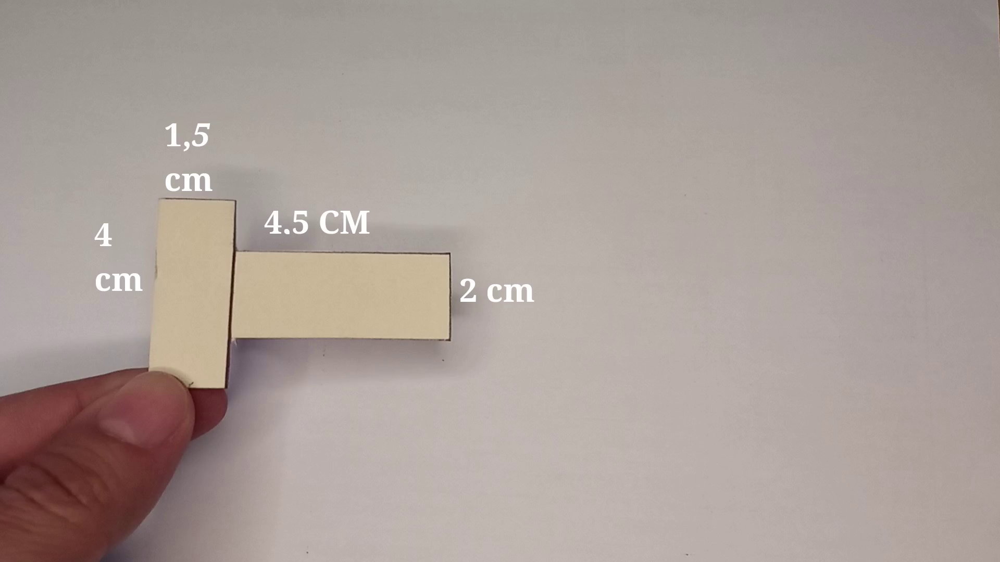
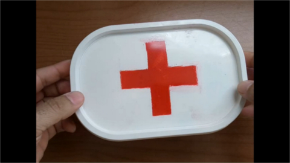
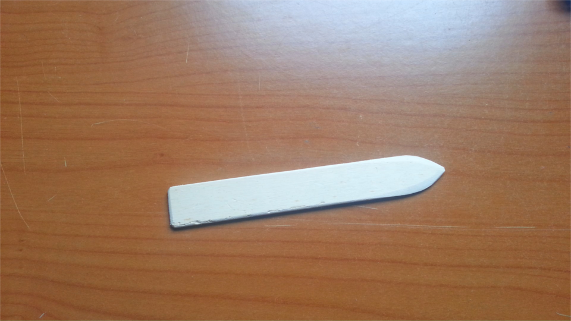
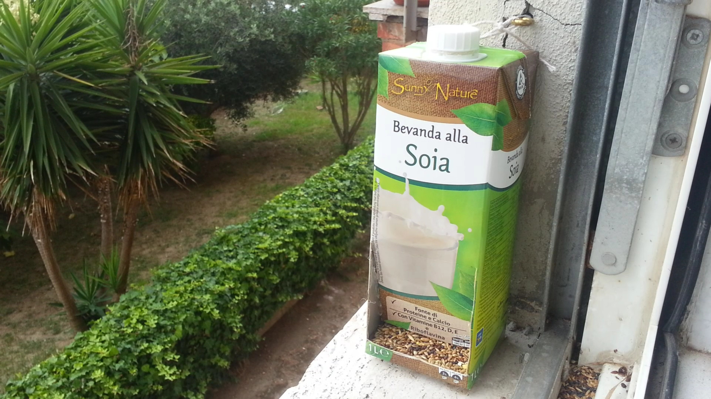
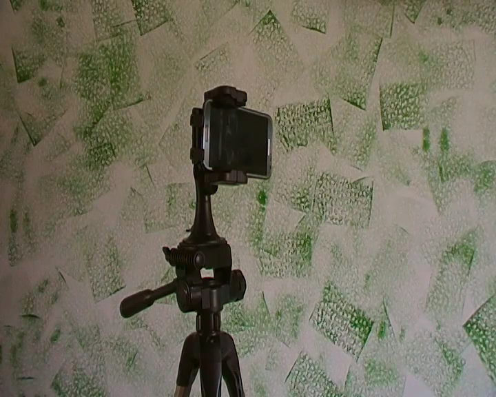
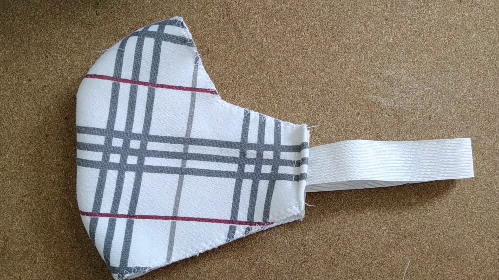
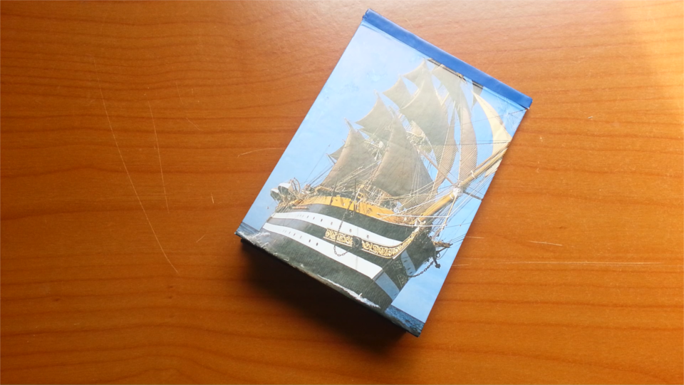
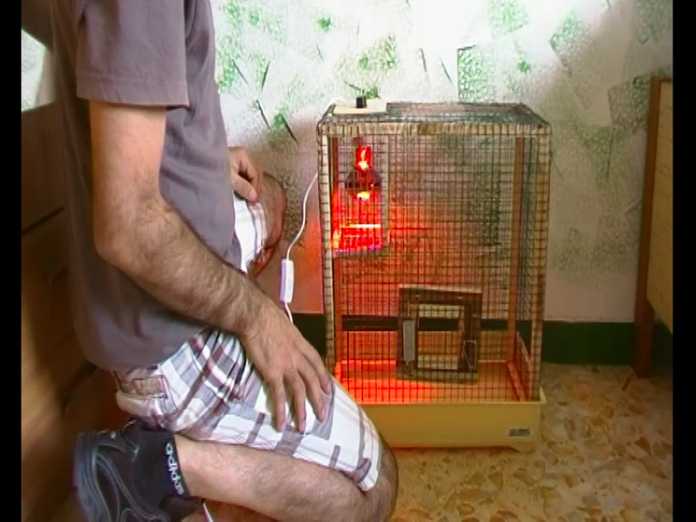
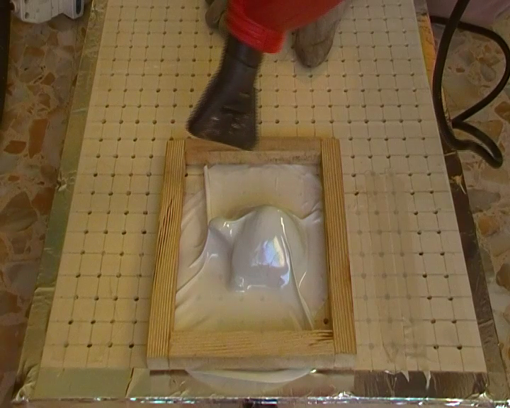
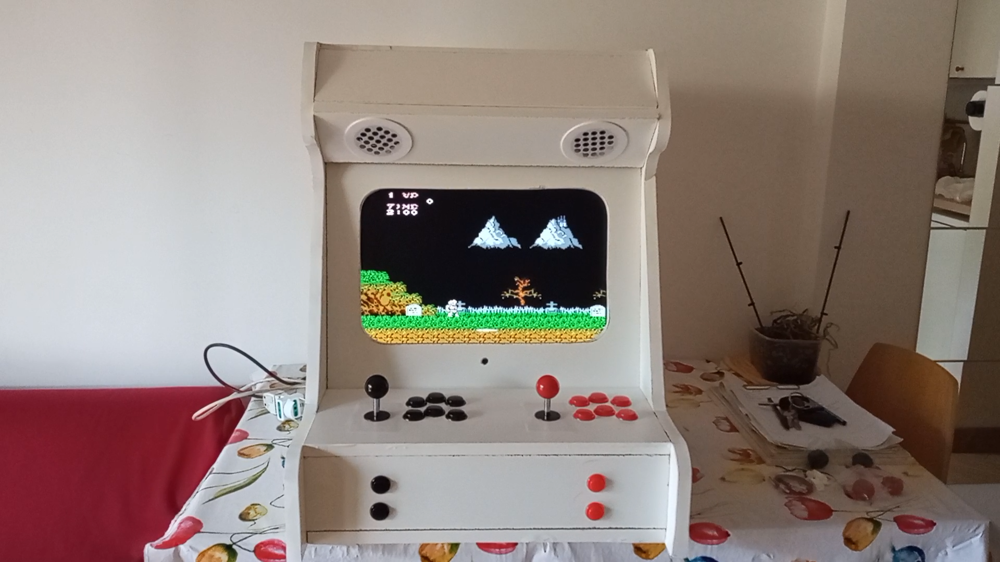

Difficoltà: BASSA
Realizzare un gancio per il casco da moto

Come realizzare un gancio per il casco della moto.

Recuperare una pianola abbandonata
Come recuperare una pianola abbandonata.
Trasformare bottiglie in serre
Come trasformare delle bottiglie in piccole serre.
Piccola valigetta per il primo soccorso

Costruire una valigetta per il primo soccorso.
Contenitori in plastica
Come realizzare dei contenitori in plastica con delle piccole bottiglie.


Come costruire un piega carta

Come costruire un piega carta con un pezzo di legno riciclato.
Recuperare una lama che non taglia
Come recuperare una lama che non taglia più.
Mangiatoia per uccelli

Come costruire una mangiatoia per uccelli con un contenitore del latte.


Costruire un supporto per cellulari da cavalletto

Come adattare un porta cellulare per il supporto al cavalletto.
Trasformare un barattolo in parabolina wireless
Come trasformare un barattolo in una parabolina wireless.

Aereo di carta differente dal solito
Come costruire un aereo di carta differente dal solito.
Fischietto con un seme
Costruire un fischietto da un seme.


Aquilone con busta della spazzatura
Come costruire un aquilone con la busta della spesa.
Paletta per semi o altro materiale
Trasformare una bottiglia di detersivo in una paletta per semi o altro materiale.
Mangiatoia giocattolo pappagalli

Costruire una mangiatoia giocattolo per pappagalli con una scatola di cottonfioche.


Difficoltà: MEDIA
Creare una candela da una bottiglia di sugo
Come creare una candela da una bottiglia di sugo.


Trasformare della stoffa avanzata in una mascherina

Come trasformare della stoffa avanzata in una mascherina fai da te.
Riutilizzare un vecchio maglione
Come riutilizzare un vecchio maglione e farne delle presine.
Recupero di grate in legno
Come recuperare delle grate in legno.
Recuperare delle batterie al litio

Come recuperare delle batterie al litio da una vecchia batteria per laptop.
Regalo personalizzato
Come realizzare un regalo personalizzato.

Block notes

Come costruire un blocco notes con vecchie riviste.
Recupero batterie ricaricabili
Come recuperare delle batterie danneggiate.


Gabbia riscaldata

Come costruire una gabbia riscaldata
Taglia bottiglie
Come costruire un taglia bottiglie.
Box per il sottovuoto

Costruire un box per il sottovuoto.


Mobiletto ricavato da una libreria
Trasformare una libreria in un mobiletto per l'ingresso.
Difficoltà: ALTA
Restauro di un vecchio monopattino
Come restaurare un vecchio monopattino.
Arcade fatto con materiale di riciclo

Come costruire un arcade con materiale di riciclo.


Voliera per pappagalli economica

Costruire una voliera per pappagalli con un costo non superiore ai 30 euro.